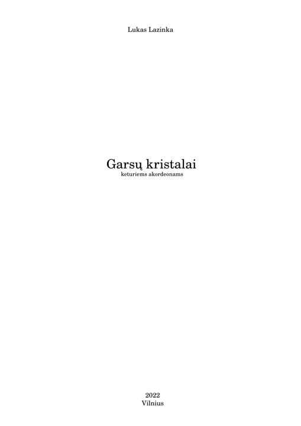
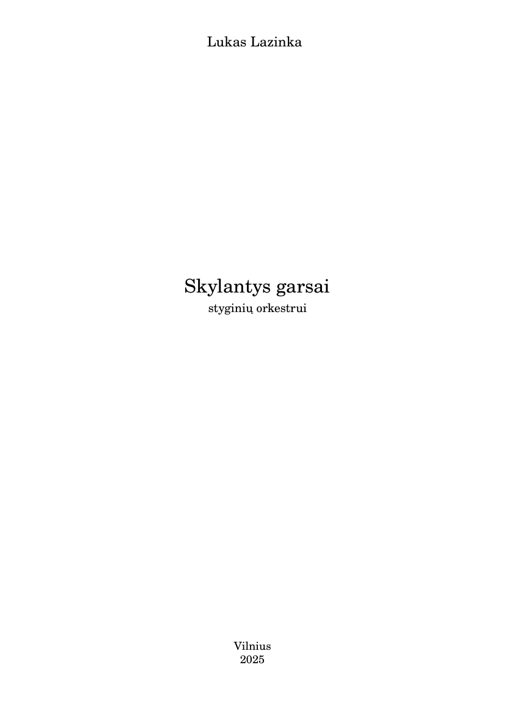
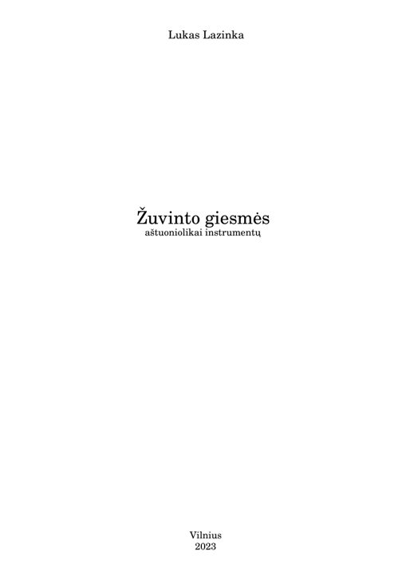
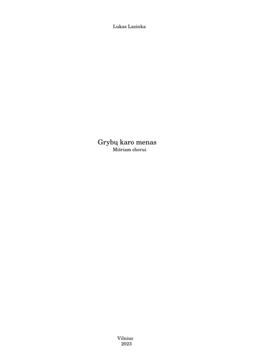
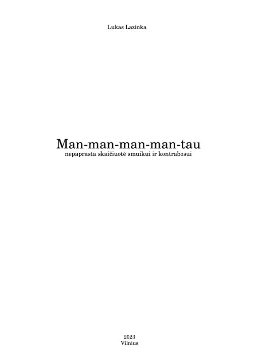
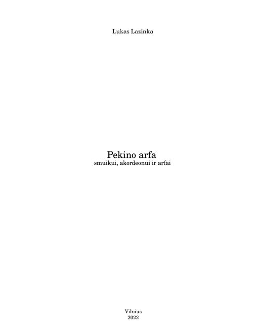
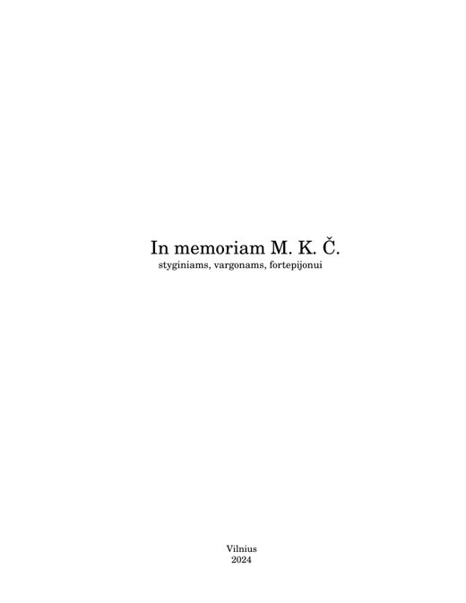

001 · 202220 €
Garsų kristalai
Keturiems akordeonams
2022 m. kūrinys keturiems akordeonams. Partitūra pateikiama skaitmeniniu PDF formatu, o visą kūrinio garso įrašą galima klausytis nemokamai.
Natų leidiniai
Autoriniai kūriniai, partitūros ir pilnos garso įrašų perklausos. Pasirinkite kūrinį ir atverkite jo puslapį.
Visų partitūrų pirmieji penki puslapiai prieinami nemokamai. Visa PDF partitūra įsigyjama per Stripe.
Katalogas

Keturiems akordeonams
2022 m. kūrinys keturiems akordeonams. Partitūra pateikiama skaitmeniniu PDF formatu, o visą kūrinio garso įrašą galima klausytis nemokamai.

Styginių orkestrui
2025 m. partitūra styginių orkestrui. Tai bakalauro studijų baigiamasis kompozicinis darbas. Nemokamai galima išklausyti visą kūrinį ir susipažinti su pirmųjų penkių puslapių partitūra.

Klarnetui ir fortepijonui
2024 m. kūrinys klarnetui ir fortepijonui. Prieinama penkių puslapių nemokama partitūros peržiūra ir visas MP3 garso įrašas.

Aštuoniolikai instrumentų
2023 m. autorinis kūrinys aštuoniolikai instrumentų. Galima peržiūrėti pirmuosius penkis partitūros puslapius ir nemokamai išklausyti visą kūrinį.

Mišriam chorui
2023 m. kūrinys mišriam chorui pagal Justino Marcinkevičiaus tekstą. Čia pateikiama nemokama partitūros ištrauka ir visas kūrinio garso įrašas.

Smuikui ir kontrabosui
2023 m. kūrinys smuikui ir kontrabosui, partitūroje apibūdintas kaip nepaprasta skaičiuotė. Klausykitės viso kūrinio ir peržiūrėkite penkis pirmuosius PDF puslapius.

Smuikui, akordeonui ir arfai
2022 m. kamerinis kūrinys smuikui, akordeonui ir arfai. Svetainėje galima nemokamai išklausyti visą įrašą ir peržiūrėti pirmuosius penkis partitūros puslapius.

Styginiams, vargonams ir fortepijonui
2024 m. partitūra styginiams, vargonams ir fortepijonui. Šiuo metu pateikiama penkių puslapių partitūros peržiūra; garso įrašas nepateiktas.